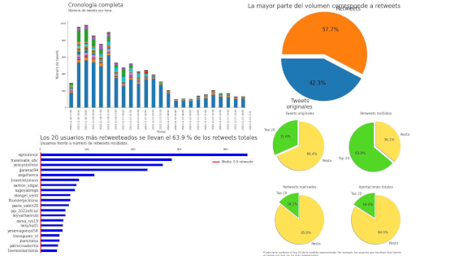

Ktor-based web app to display the historical kWh price of electricity in the Spanish market
The goal of this project is to allow people to view the historical price of kWh (kilowatt-hour) in Spain. Currently, the project is mainly a backend application, but I am learning React in order to create a client that will add interactivity and improve the display of the information.
The backend of the web application is built using Ktor, which is a Kotlin framework. The domain is from Hostinger and points to a Google Cloud virtual machine running an Apache server. The application is inside a Docker container, and eventually I am going to add another container to run the React client. The SSL certificate is from ZeroSSL.
Link: historico-precio-luz
Python script to automate the process of copying and pasting multiple files
I created a Python script to help a good friend who needed to automate a slow process in her project at a large company. The script creates an empty file and writes a header. It then loops through the XML files in a folder, extracts the text of the tags, and pastes it in a result file. Finally, it adds a footer. The user can choose between two different headers.
Link: xml-automate-copy-paste
Telegram bot to download multiple images
I created a Telegram bot using Python to download multiple images because the Android Telegram app doesn't have that option. Previously, users had to download the images one by one. However, in a recent update, Telegram added the option to download images from selected chats. I am proud that my idea filled a real need.
Link: telegram-bot-to-download-multiple-images
Twitter Data Analysis
A group of four people are making a research about hate speech inside Twitter. I used Python for that task.
Link: how-to-analyze-twitter
I also gave a lecture on my work and prepared a tutorial to help others reproduce it.
Lecture link: Twitter data analysis lecture